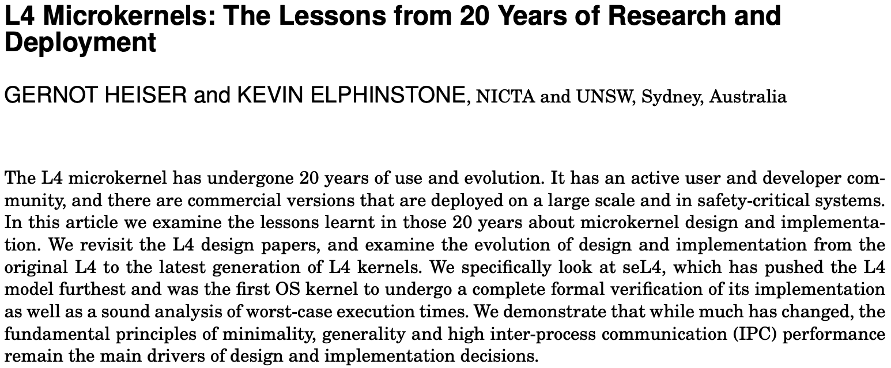
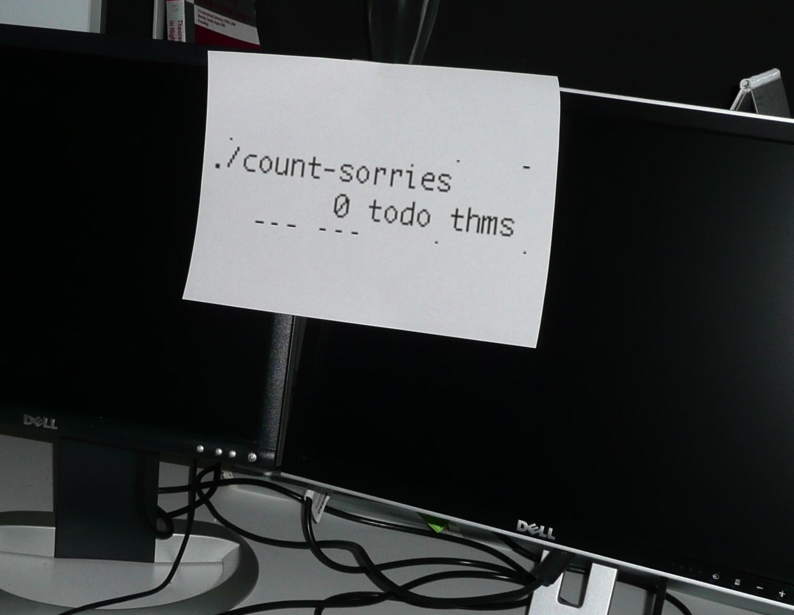
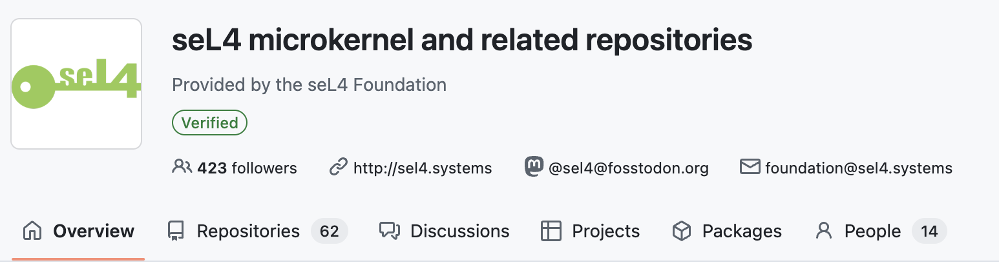

The seL4 story began in the early 2000s. In 2009, the first formally verified OS kernel was a scientific breakthrough. Since then, seL4 has continued to reach new milestones, both in research and real-world deployment and use. Here is a walk down memory lane with seL4.
' img: /images/seL4-sepia.svg alt: "Withered seL4 logo in sepia" img_class: "w-2/3" --- {% include timeline-start.html %} {% capture desc %}The notion of a microkernel first emerged in the 70's. At that time, operating systems largely ran in privileged mode, also known as kernel mode, to provide hardware abstraction mechanisms and services. First defined in Brinch Hansen's Nucleus, then in CMU's MACH kernel, the philosophy behind microkernels is to reduce the code running in kernel mode to a minimal core that is free from policy, while the rest of the operating system services run in unprivileged mode, just like application code.
The Achilles' heel of microkernels at the time was performance: application code would obtain system services by communicating via an interprocess communication (IPC) mechanism, putting this IPC on the critical path of any service invocation. This led to poor performance, claimed by some to be intrinsic to microkernels design.
In 1993, Jochen Liedtke demonstrated with his L4 kernel that microkernel IPC could be fast, a factor 10-20 faster than contemporary microkernels. This remarkable order-of-magnitude performance improvement was the start of a journey that created a whole family of microkernels and led to large-scale commercial deployment. Read more on L4 microkernel design evolution during the decades that followed Liedtke's L4 in the paper "L4 Microkernels: The Lessons from 20 Years of Research and Deployment"
' %} {% include timeline-item.html year="2004" title="Start of the L4.verified project" description='In 2004, after having spent time experimenting with microkernel designs looking for performance and complexity reduction, Gernot Heiser and Kevin Elphinstone partnered with Gerwin Klein in a project that targeted highest assurance without compromising on performance: producing a formally verified microkernel at no more than 10% performance degradation compared to the fastest kernels at the time. The L4.verified project started. Kevin led the design of a new kernel of the L4 family which would be verifiable, Gerwin led the formal specification and verification of it. seL4 was born. It not only met its performance goal, but ended up being even faster than other L4 kernels.
' %} {% include timeline-item.html year="29th July 2009" date="2009-07-29" title='0 sorries: first formally verified kernel' description='On July 29, 2009, the last "sorry" of the seL4 functional correctness proof was eliminated. A "sorry" is an assumed theorem lacking a complete proof. In the emerging field of proof engineering measuring progress was uncharted territory — counting these "sorries" was one, albeit imperfect, way to monitor progress: hundreds of theorems were first stated and "sorried" so that work on their proofs could be parallelised and tracked. Being imperfect, this measure can go up during steady progress, for instance when new properties to be proven are discovered. "0 sorries" meant there was nothing left to prove: the project was finished. We now celebrate this day every year to mark the seL4 day, when the world's first formally verified kernel with a machine-checked code-level proof came into existence.
' %} {% capture desc %}Functional correctness shows that the seL4 C code behaves exactly as its specification mandates. Subsequent breakthroughs have demonstrated that seL4 enforces the security properties of integrity, confidentiality and authority confinement; that the binary code of seL4 has the same behaviour as its C implementation; and more. Collectively, this proof stack provides unprecedented assurance that applications running on seL4 can be strongly isolated, preventing attacks from untrusted applications from propagating to critical ones.
While the research impact of seL4's verification was immediately apparent, with high-impact publications spanning the disciplines of Systems, Formal Methods, and Software Engineering, its lasting real-word significance was first demonstrated in the DARPA-funded HACMS program. In that program, seL4 was embedded in a range of autonomous vehicles, ranging from trucks, land robots, and quadcopters to Boeing's Unmanned Little Bird helicopter. At the end-of-project demonstration, the HACMS Red Team — a professional team of hackers — was unsuccessful at compromising the security of the helicopter, in flight: they were given full access to the uncritical camera feed, and were even given the keys to crash its virtual machine, but seL4 prevented the cyber attack from compromising the flight mission. This sent a resounding message, in DARPA and beyond, not only that formally verified software is usable in practice and provides unprecedented assurance, but that it can be retrofitted into existing systems to protect highly critical real-world systems. Today, the ground-breaking research around seL4 is recognised by numerous awards.
The HACMS program also marked the beginning of porting seL4 to new architectures and platforms. The original proof stack only held for Arm 32-bit hardware. During the project the proof was ported to the Intel x64 architecture. This was the start of a continuing widening of the scope of all architectures and platforms that seL4 now supports.
 '
%}
{% include timeline-item.html
year="29th July 2014"
title="Freedom day: seL4 becomes Open Source"
description='
'
%}
{% include timeline-item.html
year="29th July 2014"
title="Freedom day: seL4 becomes Open Source"
description='
With its demonstrated research and real-world impact, seL4 attracted significant interest. However, being proprietary hindered its adoption. In July 2014, on the 29th to make the "seL4 day" a double-celebratory day, the seL4 code and proofs became open source, paving the way to the widespread use it enjoys today.
' %} {% include timeline-item.html year="7th April 2020" title="Launch of the seL4 Foundation" description='With increased adoption, this open source technology needed a neutral home with a long-term future. On April 7th, 2020, the seL4 Foundation was created, with Founding Members CSIRO's Data61, Cog Systems, DornerWorks, Ghost Locomotion, HENSOLDT Cyber and UNSW Sydney.
 '
%}
{% include timeline-item.html
hide_up_button=true
year="2021"
title="seL4 becomes an Ecosystem"
description='
'
%}
{% include timeline-item.html
hide_up_button=true
year="2021"
title="seL4 becomes an Ecosystem"
description='
In 2021, the original core seL4 team becomes a network of organisations. The Trustworthy Systems group continues seL4 research at UNSW Sydney. The seL4 proof leaders create Proofcraft, a company that provides commercial support for formal verification and drives the expansion of the seL4 proofs. A number of key seL4 experts join Kry10, a company that is building an seL4-based platform for mission-critical connected devices. And the ecosystem of seL4 users, adopters and developers keeps growing, gathering annually at the seL4 summit to share the latest developments of this technology that is now a world-wide ecosystem.
' %} {% include timeline-end.html %} {% include logo-cloud.html hide_title=true margins="-mt-6 py-12 sm:py-18" %}